Considere o seguinte caso para responder às questões de 92 a 93. Considerando esse caso, analise as afirmativas abaixo. Entre as afirmativas, estão corretas

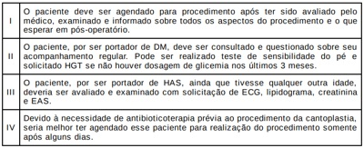
A II e IV.
B I e II.
C I e III.
D III e IV.
Para realizar uma “Gestão da Clínica” com qualidade, é necessário conhecer a demanda da unidade. A pressão assistencial significa o número de consultas/número de dias trabalhados em um mesmo período. Em uma unidade com grande pressão assistencial, para melhor organização da agenda do MFC, junto com a sua equipe de saúde, deve-se
Fabio, 52 anos, comparece à consulta, pois sua esposa insistiu, após ver a propaganda do novembro azul nas redes sociais. O médico pergunta se tem alguma queixa, e ele nega, mas diz que está receoso, porque não quer fazer o exame do toque retal, mas soube que poderia realizar o exame de PSA. Diante desse caso, o médico deve
Maria, 39 anos, chega à Unidade de Saúde de seu bairro, ESF Andrade Costa, para consulta com o Dr. Marcelo. Ao iniciar a consulta, queixa-se de dores no corpo. O Dr. Marcelo percebe o semblante abatido e pergunta se está acontecendo algo mais. Maria começa a chorar e diz: “Não aguento mais, doutor, estou com dores fortes no corpo e uma dor de cabeça insuportável”. Maria era uma paciente que ia sempre acompanhando sua tia, idosa, com Alzheimer, e seu marido, com obesidade grave, para realizar tratamento. Sem interromper, Dr. Marcelo mostra-se interessado, e Dona Maria continua: “Você sabe a pressão que vivo lá em casa, mas agora está insuportável. Tudo sou eu que tenho que resolver, meu marido e minha tia são dependentes de mim. Desde que mataram meu lho, vivo triste, mas agora está pior. Não tenho vontade de fazer nada e choro todos os dias. Não consigo dormir e co muito nervosa com tudo”. Diante da situação, como abordagem inicial, o Dr. Marcelo deve
Revisar: possível letra faltando em enunciado
A Estratégia Saúde da Família (ESF) é um modelo assistencial regulamentado e consolidado na APS brasileira. Entre as múltiplas demandas que podem se apresentar na rotina das equipes de saúde, a realização de avaliações para participação de atividade física é uma das mais recorrentes. Tendo isso em vista, no caso de um paciente masculino, 30 anos, sem doenças crônicas prévias, assintomático, que procura o médico da ESF, a conduta a ser tomada é:
Conceição tem 40 anos e busca a Unidade Básica de Saúde (UBS) com queixa de dor no peito. Na UBS, ela mantém, com o médico de família e comunidade (MFC), o diálogo abaixo. A paciente realizou investigação, e foram excluídas causas cardíacas e pulmonares. Diante disso, de acordo com os princípios da medicina de família e comunidade, a melhor abordagem do médico para explicar os sintomas físicos como somatização é:
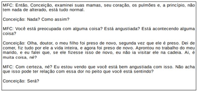
Eneida, 45 anos, vai à sua médica de família e comunidade (MFC) para acompanhamento. Com queixa de nervosismo intenso, relata que a relação com seu esposo está muito difícil desde que a mãe dela foi morar com eles. Informa também que divergem sobre a forma de educar os 2 lhos, de 15 e 12 anos. A MCF percebe que, nesse caso, seria importante aplicar alguns instrumentos de abordagem familiar. Tendo isso em vista, a médica deve
O médico de família e comunidade, para quali car o cuidado a uma população, deve lançar mão de instrumentos de “Abordagem Comunitária”, tanto para conhecer a realidade daquela comunidade quanto para intervir de maneira adequada. Entre esses instrumentos, está
Considere o seguinte caso para responder às questões de 92 a 93. Considerando os atributos da Atenção Primária à Saúde e os modelos de acesso ao cuidado, para o caso acima, o acesso
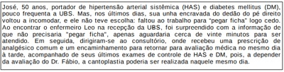
Considere o seguinte caso para responder às questões de 92 a 93. Considerando esse caso, analise as afirmativas abaixo. Entre as afirmativas, estão corretas

Considere o seguinte contexto para responder às questões de 89 a 91. Considerando o contexto apresentado, analise as a rmativas abaixo, a respeito das alternativas de elementos considerados pertinentes para a telessaúde, segundo a Organização Mundial da Saúde. Descrevem adequadamente o trabalho em telessaúde e os seus objetivos as afirmativas

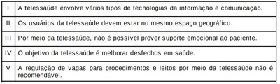
Considere o seguinte contexto para responder às questões de 89 a 91. Uma ação de telessaúde considerada exclusivamente síncrona é

Considere o seguinte contexto para responder às questões de 89 a 91. Na dinâmica do trabalho do apoio matricial, existe a Equipe de Referência (ER) do paciente, que faz parte da APS, e a Equipe de Apoio Matricial (EM), composta por diversos pro ssionais da saúde e do serviço social à disposição para fornecer suporte técnico-pedagógico à ER. Nesse sentido, são exemplos de ações de suporte técnicopedagógico do apoio matricial:
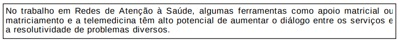
José, 56 anos, comparece à consulta com o médico de família e comunidade (MFC) para seguimento após uma queda. Relata que, há 6 meses, sofreu uma queda da própria altura, em um dia de libação alcoólica, e sofreu uma fratura de colo de fêmur. José conta que fazia uso de cerveja e cachaça diariamente, mas, após o ocorrido, não bebeu mais. Diante do fato de ter ocorrido uma fratura, o MCF deve
Considere o seguinte caso para responder às questões de 86 a 87. Durante a reunião da equipe, discutiram-se o caso de Camila, a importância da manutenção do calendário vacinal atualizado de toda a família e a vacinação em situações especiais. A esse respeito, analise as afirmativas abaixo. Entre as afirmativas, estão corretas
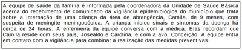
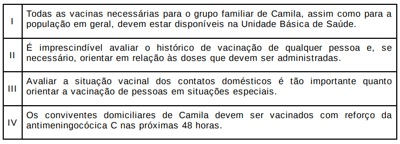
Considere o seguinte caso para responder às questões de 86 a 87. Nesse caso, a conduta mais recomendada a ser realizada nas próximas 24 horas é

Miguel, 1 ano, é levado para consulta de puericultura. Sua mãe, Maria, relata que está preocupada, pois a vizinha falou que seu lho tem mose. A criança está assintomática, urinando bem, sem outras queixas. Ao exame físico, Miguel apresenta aderência balanoprepucial, sem obstrução uretral. Diante desse caso, o médico deve
O cuidado domiciliar é uma forma de atenção à saúde, oferecida na moradia do paciente, caracterizada por um conjunto de ações de promoção à saúde, de prevenção e tratamento de doenças, de reabilitação e de cuidados paliativos, com garantia da continuidade do cuidado, e integrada às Redes de Atenção à Saúde. No que diz respeito ao cuidado domiciliar em tempos de pandemia de COVID-19,
O Método Clínico Centrado na Pessoa (MCCP) apresenta resultados mais positivos que outros utilizados para consultas médicas. Esse método aumenta a satisfação das pessoas e dos médicos, melhora a adesão aos tratamentos e diminui as queixas por más práticas. Considerando as características do MCCP, analise as afirmativas abaixo. Entre as afirmativas, estão corretas
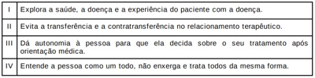
A Portaria Nº. 3.222, de 10 de Dezembro de 2019, do Ministério da Saúde, dispõe sobre o pagamento por desempenho no âmbito do Previne Brasil. No âmbito dessa portaria, são considerados indicadores de desempenho:
Vanessa, 17 anos, em união estável, comparece à UBS para realizar a primeira consulta de pré-natal com o enfermeiro. Relata que a gravidez não foi planejada; por isso, a escondeu de sua família, e só agora decidiu ir à UBS para iniciar o pré-natal tardiamente. Relata ainda que a data de sua última menstruação foi dia 20/03/21. O enfermeiro faz as primeiras orientações, solicita todos os exames e já realiza os testes rápidos para sí lis, HIV, hepatite B e hepatite C. Ao verificar o resultado dos testes, encaminha para a médica para que ela avalie, pois o teste rápido para sí lis resultou positivo. Diante desse caso, a médica deve
As infecções cirúrgicas são causas importantes de morbimortalidade no pós-operatório. Entre as medidas atualmente recomendadas para prevenção da infecção do sítio cirúrgico, está
A doença de Crohn é uma doença inflamatória intestinal que, mesmo com o progresso na terapia clínica, pode cursar com complicações de tratamento cirúrgico. É indicação absoluta de tratamento cirúrgico na doença de Crohn:
A apendicectomia é a emergência não obstétrica mais comum da gravidez, e o diagnóstico da apendicite na grávida constitui um desafio para o cirurgião. Um aspecto importante a se considerar no diagnóstico de apendicite na gravidez é que
A doença hemorroidária é comum na população e causa frequente de consultas ambulatoriais. Para seu adequado tratamento, faz-se necessário classi cá-la corretamente. Um hemorroida interna que apresenta prolapso necessitando de redução manual é considerada grau
Quando ocorre uma lesão tecidual, acontece uma sequência de eventos orquestrados que visam à cicatrização. Nessa cronologia, após
Devido à crescente importância do tratamento da obesidade mórbida por meio de cirurgia bariátrica, o Ministério da Saúde (MS) e a Agência Nacional de Saúde Suplementar (ANS) publicam, periodicamente, normas técnicas em relação à regulamentação. Uma das modi cações da Resolução Normativa Nº 465, de 24 de fevereiro de 2021, do MS e da ANS, foi a
Um ciclista de 44 anos foi arremessado contra um muro, em alta velocidade, após colisão traseira de um automóvel. Ele não usava capacete, estava agitado e agressivo na cena, e apresenta trauma facial. No momento, encontra-se letárgico e irresponsivo com respiração ruidosa e oximetria de pulso de 85%. Enquanto mantém o alinhamento da coluna cervical, o médico realiza manobra de elevação do mento e ventilação com pressão positiva, utilizando dispositivo de máscara com válvula e balão que aumenta a saturação de oxigênio de 85% para 92%. Após aspiração da cavidade oral, o médico enxerga o pólo inferior das amígdalas palatinas e tenta a intubação. A ausculta pulmonar permite evidenciar o murmúrio vesicular em ambos os campos pulmonares e a ausência de ausculta de borborigmos no epigástrio. Com base no caso clínico, analise as a rmativas abaixo. Entre as afirmativas, estão corretas
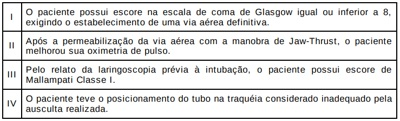
Uma das principais contribuições do FNQ (Fórum Nacional de Qualidade) foi o desenvolvimento de uma lista de Eventos Graves Reportáveis que caracterizam erros no cuidado médico claramente identi cáveis, evitáveis e de sérias consequências para os pacientes. Posto isso, analise os eventos abaixo. Os Eventos Graves Reportáveis listados pelo FNQ estão nos itens
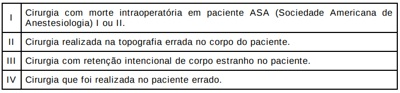
Uma das medidas importantes na avaliação anestésica pré-operatória é a realização do jejum. Segundo as recomendações mais atuais, o tempo de jejum para leite materno é de
A úlcera péptica duodenal é uma doença digestiva com múltiplos fatores etiológicos que pode necessitar de tratamento cirúrgico. Havendo complicações da doença ulcerosa duodenal, é mais recomendado realizar
As queimaduras são traumatismos muito frequentes na prática clínica diária do prontosocorro, e suas consequências podem ser devastadoras. Uma das medidas iniciais recomendadas em casos de queimaduras graves por explosão é
A síndrome de Lynch é também denominada de câncer colorretal não polipoide hereditário (CCNPH), sendo responsável por, aproximadamente, 3% dos cânceres colorretais. Para a definição de CCNPH, é considerado um critério de Amsterdã:
O empiema é uma infecção do espaço pleural que se caracteriza por exsudato, podendo levar a graves complicações infecciosas. No empiema pleural,
Em pacientes imobilizados, o suporte prolongado de peso acima da pressão de perfusão tecidual pode resultar em isquemia e necrose tecidual. Como sequelas dessa lesão, podem se formar as úlceras de pressão. Para adequada avaliação dessas úlceras, a cirurgia plástica utiliza a classificação do National Pressure Ulcer Advisory. Na referida classificação, caracteriza- se o estágio
Na avaliação inicial de um paciente com dor abdominal aguda, além de minuciosa anamnese e de exame físico, podem ser solicitados exames de imagem como ferramenta de auxílio diagnóstico. Na rotina do raio-X do abdômen agudo, solicita-se a incidência radiográfica
Paciente portador de pancreatite aguda grave, internado há 10 dias, evolui com piora clínica e laboratorial. Uma tomogra a é realizada, e o laudo apresenta a seguinte conclusão: “Coleção de uido heterogêneo e atenuações sólidas com diferentes graus de loculações com parede encapsular bem definida em região peripancreática”. Essa descrição corresponde, segundo a Classificação de Atlanta revisada em 2012, a
A torção testicular é a causa mais frequente de escroto agudo e exige diagnóstico e tratamento imediatos. A torção testicular caracteriza-se por
Paciente de 46 anos, sexo masculino, IMC = 33 Kg/m², com queixa de pirose e regurgitação, procura um clínico geral, que solicita uma endoscopia digestiva alta. O referido exame tem como conclusão: “Esofagite erosiva Grau B de Los Angeles + hérnia hiatal de 2 cm”. Com bases nesses achados, a melhor conduta inicial é
Diversos autores tentaram criar um sistema de classificação padronizado das hérnias inguinais. A classificação de Nyhus é a mais utilizada por avaliar não somente a localização e o tamanho da de ciência como também a integridade do anel e do assoalho inguinal. Segundo Nyhus, a hérnia tipo
Uma das consequências mais graves e, potencialmente, fatais do politraumatismo são as lesões vasculares. Diante disso, é importante atentar para os achados da história clínica e para o exame físico do paciente com trauma vascular. Entre esses achados,
A catatonia é um quadro sindrômico caracterizado por alteração grave da volição e da motricidade, di cultando o manejo do paciente na enfermaria, tendo em vista o negativismo, a recusa alimentar, entre outros sintomas. O tratamento farmacológico mais adequado para o manejo de pacientes catatônicos é
Os antipsicóticos são medicamentos desenvolvidos, inicialmente, para o tratamento da esquizofrenia, mas, hoje, são utilizados para vários outros transtornos, como transtorno bipolar e depressão resistente. Entre seus efeitos colaterais mais preocupantes, estão os efeitos metabólicos, como ganho de peso e síndrome metabólica. Os antipsicóticos com melhor perfil metabólico são
Homem de 61 anos, tabagista e hipertenso, chegou ao PS com queixa de dor precordial em queimação de forte intensidade associada à sudorese profusa, com início 20 minutos antes. Ao exame físico, apresentou pressão arterial de 146 x 94 mmHg, FC 92 bpm, murmúrio vesicular presente sem ruídos adventícios, duas bulhas rítmicas normofonéticas, sem sopro, pulsos presentes e simétricos. Realizou o eletrocardiograma cujo resultado está explicitado abaixo. As derivações V3R e V4R mostraram supradesnível do segmento ST de, aproximadamente, 1 mm. Após análise do ECG, foram administrados AAS 300mg. Nesse momento, considerando que o serviço de hemodinâmica mais próximo se encontrava distante há mais de 3 horas e o PS é bem equipado, dispondo dos medicamentos necessários e mais adequados ao caso, o melhor tratamento é prescrever

Paciente de sexo masculino, branco, com 44 anos, hipertenso, diabético, com doença renal crônica estágio IIIB e insu ciência cardíaca não isquêmica com fração de ejeção 30%, vem para primeira consulta ambulatorial após alta hospitalar, relatando queixa de ortopneia e dispneia em classe funcional NYHA III. Ao exame físico, constatou-se o seguinte: ritmo cardíaco irregular, 2T, com discreto sopro sistólico de regurgitação mitral; PA 130 x 80 mmHg; FC 78 bpm; ausculta pulmonar com creptos em bases; turgência jugular e re uxo hepatojugular presentes; membros inferiores com edema discreto. Está em uso dos seguintes medicamentos: Bisoprolol 10 mg; Sacubitril-Valsartan 97/103 mg 12/12 horas; Espironolactona 25 mg; Dapagli ozina 10 mg; Furosemida 80 mg 3 vezes ao dia; Atorvastatina 40 mg; Insulina NPH 20 unidades pela manhã e 10 unidades à noite. Foi realizado ECG que evidenciou ritmo de brilação atrial, com bloqueio de ramo direito e QRS de 140 ms. Em relação à otimização da terapia para insu ciência cardíaca, está indicado, para esse paciente,
Tiazolidinedionas pioglitazona Paciente masculino, 58 anos, hipertenso e diabético, vem com queixa de dispneia aos esforços, que tem piorado progressivamente e, atualmente, ocorre com moderada intensidade, acompanhada de tosse seca eventual, principalmente noturna. Faz uso irregular de losartana, hidroclorotiazida, metformina e gliclazida. No exame físico, foi observado o seguinte: ritmo cardíaco regular, crepitações em bases pulmonares e edema de membros inferiores 2+/4+, PA de 150 x 100 mmHg, FC 96 e FR 24. Os resultados dos exames trazidos pelo paciente foram os seguintes: Hb 14, Ht 42%, glicose 178 mg/dL, HbA1C 9,4%, ureia 61 mg/dL (15 – 45 mg/dL), creatinina 1,1 mg/dL (0,4 – 1,2 mg/dL), sódio 140 mEq/L (135 – 145 mEq/L), potássio 4,8 mEq/L (3,5 – 5,5 mEq/L), BNP 624 pg/mL e ecocardiograma com fração de ejeção de 56%. Considerando as comorbidades do paciente, a estratégia mais indicada para melhora do controle glicêmico do paciente é a introdução de
Bactérias Gram negativas e Gram positivas expressam distintos mecanismos de resistência aos antimicrobianos. Considerando esses mecanismos,
Sepse é uma síndrome clínica resultante de uma resposta desregulada à infecção, que ocasiona disfunção orgânica e está associada à elevada morbimortalidade nos hospitais. O diagnóstico, para orientar prontamente o tratamento baseado em evidência e reduzir a mortalidade precoce da sepse, é um desa o na prática clínica. Na ausência de um teste diagnóstico padrão, o clínico pode utilizar diversos recursos para a tomada de decisão. Em relação a esses recursos, considere as afirmações abaixo. Das afirmações, estão corretas

Um paciente, 66 anos, está em uso de meropenem para tratamento de um quadro de broncopneumonia. Vem evoluindo bem em enfermaria, com boa resposta à antibioticoterapia (D5). Manteve-se normotenso e sem edemas. Seus exames colhidos entre a admissão e o 5º dia de antibioticoterapia evidenciaram o seguinte: elevação da creatinina sérica (1,0 mg/dL para 1,4 mg/dL); diurese preservada; ureia, eletrólitos e gasometria normais; negativo para leucocitúria, hematúria e cilindrúria. Com base nesse quadro, conclui-se que há
Paciente feminina, 77 anos, após cistectomia radical, foi submetida à reconstrução urinária por meio de ureterojejunostomia externa. Após um mês do procedimento, vem apresentando fraqueza muscular. Ao exame físico, constatou-se que sua pressão arterial estava 108 x 77 mmHg e não havia edemas. Os resultados de seus exames foram os seguintes: creatinina sérica = 0,8 mg/dL; ureia = 120 mg/dL; sódio = 135 meq/L, calcemia normal. O resultado do eletrocardiograma está reproduzido abaixo. Com base nesse caso e considerando que ainda haja outros exames pendentes da primeira avaliação (potássio, magnésio e gasometria arterial), é mais provável evidenciar a associação de

Neutropenia febril é uma emergência clínica frequente nos pacientes em tratamento oncológico. Indivíduos neutropênicos apresentam comprometimento da resposta imune, cando susceptíveis a complicações infecciosas graves e com manifestações atípicas. Sobre o diagnóstico e manejo da neutropenia febril associada ao tratamento oncológico, considere as afirmações abaixo. Das afirmações, estão corretas
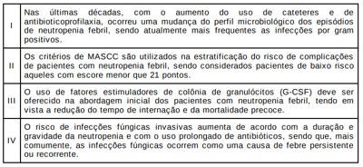
Para responder às questões 49 e 50, considere o caso abaixo. Nesse caso, o manejo adequado para melhora da oxigenação deve incluir

Para responder às questões 49 e 50, considere o caso abaixo. Quanto à estratégia ventilatória para esse paciente, o médico plantonista asseverou que
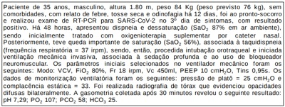
Homem de 83 anos, com passado de tabagismo importante, foi admitido no prontosocorro com quadro de forte dor no andar superior do abdome. O exame físico revelou atitude em prece maometana e sinal de Trousseau. Havia perdido 10 quilos, nos últimos 2 meses. Nesse cenário clínico, a principal hipótese diagnóstica é
A celularidade do líquido ascítico é preditivo para o clínico estabelecer o diagnóstico de peritonite bacteriana espontânea. A contagem celular que apresenta maior probabilidade para o diagnóstico de peritonite bacteriana espontânea é
A asma é uma doença heterogênea, caracterizada por in amação crônica das vias aéreas, cujos sintomas respiratórios (sibilância, dispneia, tosse e opressão) estão associados à limitação variável do fluxo aéreo. Sobre o tratamento da asma, considere as afirmações abaixo. Das afirmações, estão corretas
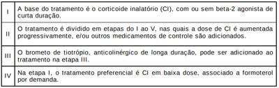
Paciente masculino, 42 anos, natural e procedente de Natal, morador da Zona Norte, vigilante, casado. Vem à consulta e informa surgimento, há 2 anos, de manchas hipocrômicas assintomáticas no abdome que, paulatinamente, atingiram o dorso, os braços e as pernas. Há um ano, refere presença de lesões eritemato-edematosas in ltradas, com bordas internas bem definidas, mas as externas pouco definidas; e agora acometem também a face. Elas têm dimensões distintas, variando de poucos centímetros a lesões muito grandes. Esporadicamente, elas tornam-se mais evidentes, vermelhas, edematosas e “quentes”. Nesses episódios agudos, associam- se a artralgias, febre medida, inapetência e cansaço físico. Na última piora, há um mês, surgiu também uma dor intensa no cotovelo esquerdo, que, ao ser apalpado, evidenciou o nervo ulnar espessado e doloroso. Além disso, notou-se perda da sensibilidade e força nos 4º e 5º dedos da mão esquerda. Nega casos semelhantes na família e nunca residiu em outro estado. Devido ao seu trabalho, por 5 anos, passou temporadas em Mossoró, há mais de 3 anos. Informa que, no último ano, fez uso de vários tratamentos orais e tópicos, entre antifúngicos, anti-inflamatórios não hormonais, analgésicos, corticoides e antihistamínicos, com melhoras parciais, mas sempre há retorno e, agora, houve agravamento do quadro clínico. Nesse caso, o diagnóstico clínico mais provável é
Marina, de 70 anos, branca, procedente de Natal-RN, do lar, professora aposentada, queixa-se de dor de forte intensidade na região dorsal, há 12 horas, sendo levada à UPA. Ao exame físico, revelava grande di culdade ao se mover na cama. À palpação das apó ses espinhosas, apresentava dor intensa na região dorso-lombar baixa. A paciente negou comorbidades, é sedentária, foi fumante de 1 maço/dia dos 15 até 65 anos, com menopausa aos 45 anos. O diagnóstico provável é
Uma jovem de 25 anos, com diagnóstico prévio de epilepsia, vai à consulta devido a quadro de dor de cabeça pulsátil, unilateral, de moderada a forte intensidade, associada a náuseas, sem vômitos, sem fonofobia ou fotofobia. Tem apresentado crises de cefaleia durante 4 dias por semana. Ela está usando fenobarbital e anticoncepcional oral. A melhor opção terapêutica para substituir o fenobarbital é
Uma mulher de 31 anos vai ao pronto-socorro, queixando-se de fraqueza nos membros inferiores há 3 dias. Associados ao quadro, desenvolveu também retenção urinária e constipação intestinal. Ao exame físico, apresenta paraparesia com hiperreflexia de patelares e aquileus, sinal de Babinski bilateral e nível sensitivo na altura do umbigo. Esses achados topografam a lesão na
Paciente de 69 anos, sexo masculino, médico, previamente hígido, iniciou quadro de tremor de mãos há doze meses, de forma simétrica, associado à bradicinesia e rigidez plástica. Foi iniciada levodopa em dose adequada, com pouca melhora clínica. Nos últimos seis meses, apresenta declínio cognitivo evidente, sendo incapaz de trabalhar. Tem desorientação têmporo-espacial e, com frequência, é visto conversando sozinho. Quando questionado, a rma que há uma criança morando em seu quarto. Na última semana, fez uso de quetiapina para ajudar no sono, com piora importante dos tremores e rigidez de membros superiores. O principal diagnóstico a ser considerado é
C.M.C., 6 meses de vida, é conduzido para o ambulatório de puericultura. Na avaliação, encontra-se em aleitamento materno exclusivo, não fazendo uso de nenhuma medicação. A mãe refere gestação e parto sem intercorrências. No momento, sem queixas e exame físico normal. Em relação à alimentação e à suplementação desse lactente, deve-se manter o
Gestante, 39 semanas por DUM, que não realizou pré-natal, procurou atendimento médico em uma maternidade de baixo risco. Encontrava-se em período expulsivo e deu à luz a um recém-nascido por parto vaginal. Durante a admissão, realizou dois testes rápidos para HIV que foram positivos. A melhor conduta quanto à pro laxia desse recém-nascido, segundo a nota informativa nº 6/2021 do Ministério da Saúde, é realizar os cuidados imediatos na sala de parto e
Lactente de 9 meses comparece à consulta de puericultura no Hospital Universitário da sua cidade. A mãe solicita orientação quanto à alimentação, já que o bebê recebe apenas mingau de leite integral de vaca com araruta e açúcar em mamadeira, desde o 3° mês de vida. Em alguns lanches, consome também iogurte e biscoito maisena. Não recebe complexos vitamínicos, nem ferro. Está com crescimento e desenvolvimento adequados para a idade. Diante dessa situação, o residente de pediatria suspeita das seguintes consequências para o bebê
Criança de 6 meses de idade apresenta quadro de diarreia há 4 dias, com evacuações em grande volume, consistência semilíquida, 6 vezes por dia, sem sangue ou muco. Febre e vômito nos dois primeiros dias. Ao acompanhamento, persistiu com diarreia por 15 dias, com surgimento de distensão abdominal, aumento da atulência, meteorismo abdominal e evacuações explosivas. Nível socioeconômico e condições ambientais inadequadas. Fez uso de leite materno até o segundo mês de vida. Desde então, em uso de fórmula infantil, com 6 mamadeiras ao dia. Ainda não introduziu alimentação complementar. Calendário vacinal completo para a idade. Ao exame físico, apresenta magreza, abdome distendido e hipertimpânico, dermatite em períneo e está hidratada. Sem outros achados. Nesse caso o diagnóstico é de diarreia aguda por
Mãe comparece ao pronto atendimento com o seu bebê de 6 semanas de vida, com queixa de que, desde que a criança completou o primeiro mês, vem apresentando vômitos leitosos em jatos e diminuição significativa da diurese. No início, os vômitos eram menos frequentes, mas, atualmente, persistem após todas as alimentações. O bebê encontra-se com sinais de hiperperistalse gástrica, em aleitamento materno exclusivo e com bastante avidez em buscar o seio materno desde o início dos sintomas. Nesse caso, esse lactente, provavelmente, apresenta
Um pediatra recebe, em seu consultório, um menino, 4 anos, com história de disúria, urina escura e febre há 2 dias. Tentando ajudar na sua hipótese diagnóstica, solicita um sumário de urina, que evidencia: pH 6, densidade 1030, nitrito positivo, leucoesterase 3+, leucócitos > 100 p/c e hemácias 30 p/c. Ao receber a prescrição do antibiótico, a mãe relata que a criança “vive tomando antibiótico pro xixi”, sempre tem muita di culdade para urinar e se espreme muito “para mijar”. Tentando entender melhor o caso, o pediatra interroga a mãe e descobre que, durante o pré-natal, uma USG obstétrica mostrou dilatação pielocalicial bilateral com bexiga distendida e oligoâmnio. De acordo com o caso clínico, a principal hipótese diagnóstica é
A diabetes mellitus I é a doença crônica mais prevalente na infância e a cetoacidose diabética (CAD) uma das complicações mais graves. Em relação a CAD,
Menino de 3 anos comparece à consulta pediátrica apresentando quadro de astenia que começou há 2 meses. A mãe relata que a criança dorme durante toda a tarde e brinca com menor frequência. Os exames laboratoriais solicitados mostram os seguintes resultados: Hemograma Hb 6,0 g/dL, vcm 60 fL, Ht 18 %, Ferro 20 ng/ml, IS 6%, Ferritina 3 ng/ml, Leucócitos 5.600/mm³, Plaquetas 560.000/mm³. O diagnóstico e tratamento dessa criança são, respectivamente,
A OMS estima que a ocorrência de sí lis complica um milhão de gestações por ano em todo o mundo. Em relação à sí lis congênita, considere as afirmativas abaixo. Das afirmativas, estão corretas

Lactente de 15 meses é avaliado na Unidade de Emergência por crise epiléptica tônicoclônica generalizada, com duração de 20 minutos, associada à temperatura de 38 °C. A criança não apresenta antecedentes neurológicos. Seu pai tem história de crise febril. Nesse caso, o fator que está associado ao aumento do risco de epilepsia é a
Lactente, acompanhado por sua mãe, chegou ao consultório pediátrico a m de realizar consulta de puericultura. Entre as dúvidas da genitora, ela gostaria de saber quais vacinas deveriam ser administradas com precauções, uma vez que seu lho teve antecedente de reação ana lática sistêmica comprovada, após ingestão de ovo. Sendo assim, o pro ssional deve alertar para a realização com prudência da
Pais compareceram, com o seu lho de 10 dias de vida, para a primeira consulta pediátrica. Ao nascimento, seu peso foi 3.100 g e, no momento, está em aleitamento materno exclusivo. Durante a consulta, o pediatra observa que a técnica de amamentação está correta, o RN tem exame físico normal e o seu peso atual é de 3.130 g. Nesse caso, a melhor orientação pediátrica será manter a
Um menino de 5 anos é levado ao pronto-socorro com história de adinamia e febre intermitente há 4 semanas, além de mialgia, dor articular generalizada e exantema róseo macular mais evidente em tronco e axilas. Ao exame físico, estava hipocorado (+/4+), com os aparelhos respiratório e cardiovascular sem alterações, linfonodomegalias cervicais e oroscopia com hipertro a de amígdalas. Também apresentava edema, calor, rubor e limitação em punhos, joelho e tornozelo esquerdo. Os exames laboratoriais revelaram: hemoglobina 9 g/dL; hematocrito 28%; 13.000 leucócitos/mm³ (0% mielócitos, 3% bastões, 60% segmentados, 30% linfócitos, 6% monócitos, 1% eosinó los, 0% basó los); 470.000 plaquetas/mm³; proteína C reativa 12 mg/dL; VHS 80 mm/1ª h. Ecocardiograma: pericardite leve. Fator reumatoide e FAN: negativos. USG abdominal com discreta hepatomegalia. Esse quadro clínico sugere
João tem 1 ano e acordou com as mãos com edema e dolorosas. Sua mãe não observou exposição a nenhuma substância ou alimento estranhos no dia anterior. Ao ser atendido no pronto-socorro, fez exames que mostraram: Hemograma com Ht 7.0 %, VCM 80 fl, Leucócitos 13.500/mm³, Plaquetas 550.000/mm³, reticulocitos 6 %. Diante desse caso, o diagnóstico é
Considere a descrição abaixo, referente a um reflexo evidenciado pelo pediatra ao examinar um recém-nascido. A descrição corresponde ao reflexo de
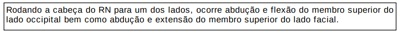
Mãe chega ao consultório médico preocupada por suspeitar que seu lho, adolescente de 12 anos, seja magro demais, além de perceber que ele é menor do que os colegas da escola. A partir da avaliação nutricional, considerando o referencial OMS 2007, foram observados os seguintes resultados para os índices antropométricos em escore Z: estatura para idade (E/I) = -1,8DP e Índice de Massa Corpórea para a Idade (IMC/I) = -2,1DP. Considerando esses dados, o adolescente tem
Adolescente de 13 anos, sexo masculino, vem ao pronto atendimento com queixa de dor testicular esquerda súbita e intensa, que o despertou do sono, iniciada há 4 horas. No início do quadro, relata também náuseas e um episódio de vômito. Ao exame físico, o testículo esquerdo se encontra um pouco maior que o direito com a pele da bolsa escrotal levemente edemaciada, horizontalizado e não está pendular. Baseando-se no diagnóstico mais provável para o quadro acima e considerando ainda os diagnósticos diferenciais possíveis,
A frequência cardíaca (FC) é o principal determinante da decisão de indicar as diversas manobras de reanimação neonatal durante o atendimento na sala de parto. O método que demonstra a forma mais acurada, rápida e contínua de detecção da FC nos primeiros minutos de vida denomina-se
Escolar de 5 anos é levado ao pediatra com história de ter iniciado, há 2 semanas, malestar, cefaleia, hiperemia ocular e odinofagia. Evoluiu com melhora dos sintomas iniciais, passando a apresentar, há 3 dias, tosse seca e chiado. A mãe da criança relatou também que o menino está tossindo há 3 semanas. Foi solicitada radiogra a de tórax que evidenciou infiltrado intersticial peri-hilar. A conduta apropriada, nesse caso, será a prescrição de
J.G.P., 2 anos, é levado ao pediatra para investigação de tosse produtiva crônica, com períodos de melhora e piora, além de, segundo a mãe, evacuações constantemente amolecidas. Na ocasião, apresentava-se pesando 9,9 kg. No cartão de vacinas, havia o registro de que a criança nasceu a termo, pesando 2900 g. Considerando desses dados, a hipótese diagnóstica que melhor justifica o quadro clínico do paciente e suas respectivas manifestações clínicas são
Em uma consulta de pré-natal, geralmente, o motivo da consulta é a gravidez. No entanto, o atendimento deverá ser conduzido de forma a deixar a paciente à vontade para relatar e perguntar o que desejar. Ao médico, cabe esclarecer dúvidas, alertar sobre riscos e procurar dar os diagnósticos de possíveis intercorrências na gravidez como também tratamento adequado das doenças no ciclo gravídico. Considerando as infecções durante a gestação,
O planejamento familiar é um direito sexual e reprodutivo, o qual assegura a livre decisão da pessoa sobre ter ou não lhos, não podendo haver imposição sobre o uso de métodos anticoncepcionais ou sobre o número de lhos. A Constituição Federal e a Lei n° 9.263, de 12 de janeiro de 1996 asseguram esse planejamento e o regulamentam, devendo ser garantido pelo governo. Conforme esses dispositivos legais,
Partos prematuros são nascimentos antes da 37ª semana de gestação. A sua prevenção, durante o pré-natal, é, poucas vezes, possível, pois, geralmente, apresenta etiologia multifatorial ou desconhecida. Em relação ao trabalho de parto prematuro,
Partograma é um gráfico no qual são anotadas a progressão do trabalho de parto e as condições da mãe e as do feto. Quando bem utilizado, ele permite diminuição de intervenções desnecessárias e contribui para melhores desfechos obstétricos. Dessa forma, pode-se avaliar, com o auxílio dessa ferramenta, que
A distocia do parto é, por definição, a anormalidade no desenrolar do trabalho de parto, sendo apontada, nos Estados Unidos da América, como a indicação mais comum de cesárea em primigestas, e, no Brasil, não é muito diferente. Sobre a distocia, é INCORRETO afirmar:
Sabe-se que o mecanismo de parto é o conjunto de movimentos ativos e, principalmente, passivos do feto durante sua passagem pelo canal vaginal. A estática in uencia diretamente em como se dará esse fenômeno e, consequentemente, seu desfecho. Por isso, é imprescindível que o médico obstetra e o generalista conheçam esse mecanismo. No trabalho de parto, na apresentação
Paciente com 32 semanas de gestação informa perda líquida há 3 dias. Ao exame físico, apresentou o seguinte: pulso = 98 bpm e temperatura = 38,5 °C. Os resultados dos exames laboratoriais foram: leucograma = 18.330 leucócitos com 70% de segmentados e 20% de bastonetes. Diante do quadro apresentado, o ginecologista deve prescrever
Paciente primigesta, 8 semanas de gestação, vem para primeira consulta de pré-natal e apresenta glicemia de jejum de 96 m/dL. De acordo com o consenso Rastreamento e diagnóstico de diabetes mellitus gestacional no Brasil, de 2017 (Organização PanAmericana da Saúde e Ministério da Saúde), a paciente
A infecção urinária na gestação é uma patologia frequente que deve ser diagnosticada e tratada precocemente, com intuito de prevenir suas complicações, em especial o parto prematuro. No acompanhamento da gestante, a bacteriúria assintomática deve ser tratada
Uma das frequentes queixas das adolescentes nos consultórios é a dismenorreia, o que, muitas vezes, atrapalha sua convivência social e até mesmo suas atividades escolares e de lazer. Sobre essa patologia, analise as afirmações abaixo. Das afirmações, estão corretas:
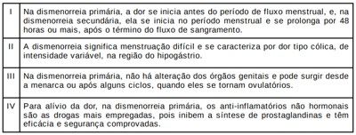
Primigesta de 16 anos que realizou pré-natal na Unidade Básica de Saúde apresentou quadro de convulsão tônico-clônica na sala de espera do Centro Obstétrico. Na carteira de pré-natal, havia registro de gestação de 35 semanas, sem intercorrências, e de pressão arterial de 140x90 mmHg na última consulta realizada, há 7 dias. A acompanhante informou que a paciente estava se queixando de cefaleia e visão turva. Ao exame físico, encontrava-se inconsciente, com pressão arterial de 170x120 mmHg, frequência respiratória de 16 mpm, SaO₂ de 95% e temperatura corporal de 37,2 °C. A dinâmica contrátil do útero estava ausente, e os batimentos cardiofetais eram de 120 bpm, sem desacelerações ou acelerações transitórias. Foi administrado sulfato de magnésio com objetivo de controle do quadro. Nesse caso, se a paciente estiver fazendo uso de sulfato de magnésio para prevenção de convulsões com quadro de pré-eclâmpsia grave, deve-se administrar gluconato de cálcio 10 ml a 10% quando ela apresentar
Paciente de 26 anos nunca realizou citologia oncológica (CO) e vem para sua primeira consulta com ginecologista. Paciente sem queixas. Nega comorbidades. Foi realizado exame físico completo e coleta de CO. No retorno, traz resultado que mostra células escamosas atípicas de significado indeterminado, não se podendo afastar lesões neoplásicas (ASC-H) de alto grau. De acordo com as Diretrizes Brasileiras para o rastreamento do câncer do colo uterino e o INCA/Ministério da Saúde, a paciente deverá
O objetivo primordial da avaliação fetal antenatal é identi car fetos de risco para eventos adversos ou para o óbito e, assim, atuar preventivamente para evitar o insucesso. O per l biofísico fetal atinge sua máxima e ciência quando aplicado dentro do contexto clínico de cada caso. O perfil biofísico fetal avalia
A violência sexual contra as mulheres é uma realidade, e os serviços de saúde, assim como seus pro ssionais, devem estar preparados para esse acolhimento e atendimento adequado. Em relação ao atendimento à vítima de estupro nos serviços de saúde,
Mulher de 27 anos apresenta amenorreia há 4 meses, sem outras queixas. Refere menarca aos 14 anos, com ciclos regulares até um ano atrás, quando os intervalos começaram a car mais longos. Nunca engravidou. Pratica atividade física diária intensa (corrida, musculação e ciclismo). Ao exame físico, não foram constatadas alterações. Na investigação diagnóstica, apresentou os seguintes resultados: dosagem de prolactina normal; Beta-HCG sérico negativo; FSH e LH séricos diminuídos; estrogênio sérico diminuído; níveis séricos de androgênios normais; ressonância nuclear magnética de crânio normal; ultrassonogra a pélvica transvaginal com útero em anteverso exão com miométrio homogêneo, volume de 80 cm³, eco endometrial 3 mm, ovário D com volume de 3 cm³, ovário E com volume de 3 cm³. Diante do quadro exposto, a paciente apresenta
No acompanhamento do puerpério, durante o aleitamento materno, o contraceptivo hormonal, deverá conter
Paciente de 26 anos apresentou queixa de corrimento vaginal esverdeado, com odor e prurido há 2 semanas, durante consulta médica. Refere disúria importante associada à dispareunia. Considerando o conteúdo vaginal, este deve apresentar
Primigesta de 30 anos, com 34 semanas de gestação, apresentou sangramento vaginal abundante, de cor vermelho viva, sem queixa de cólica. O colo uterino está fechado e normal, não havendo evidência de perda de líquido amniótico e de sangramento no momento. Os dados vitais encontram-se normais bem como os exames laboratoriais. O feto está reativo, com frequência cardíaca de 150 bpm, e seu peso estimado é de 2 kg. Nesse caso, o diagnóstico é
O câncer de mama é, na atualidade, uma questão de saúde pública mundial. O rastreamento deve contemplar populações de risco padrão para desenvolvimento do câncer de mama, chamado risco populacional. Quanto ao rastreamento do câncer de mama, analise as afirmações abaixo. Das afirmações, estão corretas

No Brasil, de acordo com a legislação em vigor desde 1940, o abortamento está descriminalizado quando não há outra forma de salvar a vida da gestante; e quando a gravidez decorre de estupro. O acesso à interrupção legal e segura da gestação tem sido garantido às mulheres de forma precária e limitada, o que as leva a recorrer ao aborto clandestino e inseguro. Dessa forma, o aborto legal Respostas: 1 12 23 34 45 56 67 78 89 100